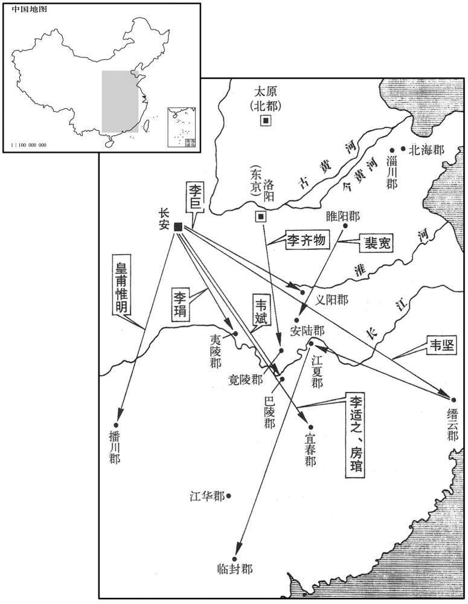

公元746年资治通鉴：本年记事、原文与白话对照
按原书编年位置阅读；追叙和史论不等于本年发生的事件。白话采用所据译本，缺译不以生成译文补齐。
卷215 · 本年记事
公元746年 · 唐玄宗至道大圣大明孝皇帝天宝五年
五年〔（丙戌、七四六）〕
上传原文的注释括号有异常，字符原样保留；无法可靠划分的段落默认全文显示。
本年事件索引（现代整理）

本年形势与背景参考图
春，正月，乙丑，以陇右节度使皇甫惟明兼河西节度使。
本段缺少可靠对应白话，原文完整保留；未使用生成译文。
李适之性疏率，李林甫尝谓适之曰：「华山有金矿，〔华，户化翻。西山记曰：太华之山，削成而四方，其高五千仞，其广十里。矿，古猛翻。〕采之可以富国，主上未知之也。」他日，适之因奏事言之。上以问林甫，对曰：「臣久知之，但华山陛下本命，王气所在，〔帝制华岳碑曰：予小子之生也，岁景戌，月仲秋，膺少皞之盛德，协太华之本命，故常寤寐灵岳，肸响神交。林甫知此旨，故以误适之而陷之。王，于况翻。〕凿之非宜，故不敢言。」上以林甫为爱己，薄适之虑事不熟，谓曰：「自今奏事，宜先与林甫议之，无得轻脱。」适之由是束手矣。适之既失恩，韦坚失权，益相亲蜜，林甫愈恶之。〔恶，乌路翻。〕
本段缺少可靠对应白话，原文完整保留；未使用生成译文。
初，太子之立，非林甫意。〔事见二百十卷开元二十六年。〕林甫恐异日为己祸，常有动摇东宫之志；而坚，又太子之妃兄也。皇甫惟明尝为忠王友，〔见二百十三卷开元十八年。〕时破吐蕃，入献捷，见林甫专权，意颇不平。时因见上，乘间微劝上去林甫，〔吐，从暾入声。因见，贤遍翻。间，古苋翻。去，羌吕翻。〕林甫知之，使杨慎矜密伺其所为。〔伺，相吏翻。〕会正月望夜，太子出游，与坚相见，坚又与惟明会于景龙观道士之室。〔景龙观在长安城中崇仁坊。申公高士廉宅西北左金吾卫，神龙元年，并为长宁公主宅，韦庶人败后，遂立为观，仍以中宗年号为名。观，古玩翻。〕慎矜发其事，以为坚戚里，不应与边将狎昵。林甫因奏坚与惟明结谋，欲共立太子。坚、惟明下岳，〔将，即亮翻。昵，尼质翻。下，遐嫁翻。〕林甫使慎矜与御史中丞王鉷、京兆府法曹吉温共鞫之。〔考异曰：旧林甫传云：「林甫潜令慎矜伺坚隙，奏上。」慎矜传云：「鉷推坚，慎矜引身中立以后望，鉷恨之，林甫亦憾焉。」二传自相矛楯。今从唐历。〕上亦疑坚与惟明有谋而不显其罪，癸酉，下制，责坚以干进不已，贬缙云太守；〔缙云郡本括州永嘉郡，元年更郡名。考异曰：旧纪「贬括苍太守」。今从实录及旧传。〕惟明以离间君臣，〔间，古苋翻。〕贬播川太守；〔播川郡，播州。〕仍别下制戒百官。
本段缺少可靠对应白话，原文完整保留；未使用生成译文。
以王忠嗣为河西、陇右节度使，兼知朔方、河东节度事。忠嗣始在朔方、河东，每互市，高估马价，诸胡闻之，争卖马于唐忠嗣皆买之。由是胡马少，〔少，诗沼翻。〕唐兵益壮。及徙陇右、河西，复请分朔方、河东马九千匹以实之，〔复，扶又翻。〕其军亦壮。忠嗣杖四节控制万里，天下劲兵重镇皆在掌握，与吐蕃战于青海、积石，皆大捷。又讨吐谷浑于墨离军，虏其全部而归。〔吐，从暾入声。谷，音浴。〕
本段缺少可靠对应白话，原文完整保留；未使用生成译文。
夏，四月，癸未，立奚酋婆固为昭信王，契丹酋楷洛为恭仁王。〔酋，慈由翻。婆，素禾翻。〕
本段缺少可靠对应白话，原文完整保留；未使用生成译文。
己亥，制：「自今四孟月，皆择吉日祀天地、九宫。」
本段缺少可靠对应白话，原文完整保留；未使用生成译文。
韦坚等既贬，左相李适之惧，自求散地。〔散，奚但翻。〕庚寅，以适之为太子少保，罢政事。其子卫尉少卿霅尝盛馔召客，〔霅，文甲翻。馔，雏皖翻，又雏恋翻。〕客畏李林甫，竟日无一人敢往者。
本段缺少可靠对应白话，原文完整保留；未使用生成译文。
以门下侍郎、崇玄馆大学士陈希烈同平章事。〔后魏置崇玄署，掌僧、尼、道士、女冠。隋以崇玄署隶鸿胪。唐置诸寺观监，隶鸿胪，每寺观有监一人；贞观中，废寺观监。上元二年，置漆园监，寻废；开元二十五年，置崇玄学于玄元皇帝庙；天宝元年，两京置博士、助教各一员。二年，改崇玄学曰崇玄馆，博士曰学士，助教曰直学士；置大学士，以宰相为之，领两京玄元宫及道院。〕希烈，宋州人，以讲老、庄得进，专用神仙符瑞取媚于上。李林甫以希烈为上所爱，且柔佞易制，〔易，以鼓翻。〕故引以为相；凡政事一决于林甫，希烈但给唯诺。〔唯，于癸翻。〕故事，宰相午后六刻乃出，林甫奏，今太平无事，巳时即还第，军国机务皆决于私家；主书抱成案诣希烈书名而以。
本段缺少可靠对应白话，原文完整保留；未使用生成译文。
五月，壬子朔，日有食之。
本段缺少可靠对应白话，原文完整保留；未使用生成译文。
乙亥，以剑南节度使章仇兼琼为户部尚书；诸杨引之也。
本段缺少可靠对应白话，原文完整保留；未使用生成译文。
秋，七月，丙辰，敕：「流贬人多在道逗留。自今左降官日驰十驿以上。」〔上，时掌翻。〕是后流贬者多不全矣。
本段缺少可靠对应白话，原文完整保留；未使用生成译文。
杨贵妃方有宠，每乘马则高力士执辔授鞭，织绣之工专供贵妃院者七百人，中外争献器服珍玩。岭南经略使张九章，广陵长史王翼，〔广陵郡，扬州。长，知两翻。〕以所献精美，九章加三品，翼入为户部侍郎；天下从风而靡。民间歌之曰：「生男勿喜女勿悲，君今看女作门楣。」〔凡人作室，自外至者，见其门楣宏敞，则为壮观。言杨家因生女而宗门崇显也。或曰：门以楣而拄，言生女能拄门户也。〕妃欲得生荔支，岁命岭南驰驿致之，〔自苏轼诸人，皆云此时荔支自涪州致之，非岭南也。比至长安，色味不变。〔白居易曰：荔支生巴、峡间。树形团团如帷盖，叶如冬青，华如橘，春荣，实如丹，夏熟，朵如蒲萄，核如枇杷，壳如红绘，膜如紫绡，瓤肉洁白如冰雪，浆液甘酸如醴酪。大略如彼，其实过之。若离本枝，一日而色变，二日而香变，四五日外色香味尽去矣。
本段缺少可靠对应白话，原文完整保留；未使用生成译文。
至是，妃以妬悍不逊，上怒，命送归兄铦之第。〔悍，户罕翻，又户旰翻。〕是日，上不怿，比日中，犹未食，左右动不称旨，横被棰挞。〔比，必利翻，及也。称，尺证翻。棰，止橤翻。横，户孟翻。〕高力士欲尝上意，请悉载院中储偫送贵妃，凡百余车；上自分御膳以赐之。〔偫，直里翻。〕及夜，力士伏奏请迎贵妃归院，遂开禁门而入。〔唐六典：城门郎掌京城、皇城宫殿诸门开阖之节。承天门击晓鼓，听击钟后一刻，鼓声绝，皇城开门。第一冬冬鼓声绝，宫城门及左、右延明门、干化门开。第二冬冬鼓声绝，宫殿门开。夜，第一声冬冬鼓声绝，宫殿门闭。第一冬冬声绝，宫城门闭，及左、右延明门皇城门闭。其京城门开闭，与皇城门同刻。承天门击鼓，皆听漏刻契，契至乃击；待漏刻所牌到，鼓声乃绝。凡皇城阖门之钥，先酉而出，后戌而入；开门之钥，后丑而出，夜尽而入。京城阖门之钥，后申而出，先子而入；开门之钥，后子而出，先卯而入。若非其时，而有命启闭，则诣阖覆奏，奉旨合符而开阖之。殿门及城门，若有敕夜开，受敕人具录须开之门，宣送中书门下。偫，直里翻。〕自是恩遇愈隆，后宫莫得进矣。
本段缺少可靠对应白话，原文完整保留；未使用生成译文。
将作少匠韦兰、兵部员外郎韦芝为其兄坚讼冤，〔少，始照翻。为，于伪翻。〕且引太子为言；上益怒。太子惧，表情与妃离婚，乞不以亲废法。丙子，再贬坚江夏别驾，〔江夏郡，鄂州。旧志：鄂州，京师东南二千三百四十六里。夏，户雅翻。〕兰、芝皆贬岭南。然上素知太子孝谨，故谴怒不及。李林甫因言坚与李适之等为朋党，后数日，坚长流临封，适之贬宜春太守，太常少卿韦斌贬巴陵太守，嗣薛王琄贬夷陵别驾，睢阳太守裴宽贬安陆别驾，河南尹李齐物贬竟陵太守，〔临封郡本封州广信郡，元年更郡名。宜春郡，袁州。巴陵郡，岳州。夷陵郡，峡州。安陆郡，安州。竟陵郡本复州沔阳郡，元年更郡名。旧志：封州至京师水陆四千五一十里；岳州二千二百三十七里；峡州一千八百八十里；安州，京师东南二千五十一里；复州一千八百里。斌，音彬。琄，胡畎翻。〕凡坚亲党坐流贬者数十人。斌，安石之子。琄，业之子，坚之甥也。琄母亦令随琄之官。〔韦安石事武后、中、睿三朝。业，上之弟也。〕
本段缺少可靠对应白话，原文完整保留；未使用生成译文。
冬，十月，戊戌，上幸骊山温泉；十一月，乙巳，还宫。
本段缺少可靠对应白话，原文完整保留；未使用生成译文。
赞善大夫杜有邻，〔唐赞善大夫，正五品上，掌讽诵规谏太子。〕女为太子良娣，〔唐太子内官，良娣，正三品。娣，特计翻。〕良娣之姊为左骁卫兵柳绩妻。〔骁，坚尧翻。〕绩性狂疏，号功名，善交结豪俊。〔好，呼到翻。喜，许记翻。〕淄川太守裴敦复荐于北海太守李邕，〔北海郡，青州。〕邕与之定交。绩至京师，与著作郎王曾等为友，皆当时名士也。
本段缺少可靠对应白话，原文完整保留；未使用生成译文。
绩与妻族不协，欲陷之，为飞语，告有邻妄称图谶，交构东宫，指斥乘舆。〔乘，绳证翻。〕林甫令京兆士曹吉温与御史鞫之，〔士曹司士参军事，掌津梁、舟车、舍宅、工艺。〕乃绩首谋也。温令绩连引曾等入台。十二月，甲戌，有邻、绩及曾等皆杖死，积尸大理，〔考异曰：旧纪、唐历皆作「辛未」。今从实录。实录云「绩与其党并伏法」，诏书则曰：「犹宽极刑，俾从杖罪，其王曾等，各决重杖一百；杜有邻、柳绩念以微亲，特宽殊死，决一顿，贬岭南新兴尉。」吉温传则云：「绩等杖死，积尸于大理寺。」盖诏虽与杖，其实皆死杖下也。」妻子流远方；中外震栗。嗣虢王巨贬义阳司马，〔义阳郡，申州。旧志：申州至京师一千七百九十六里。〕巨，邕之子也。〔高祖之子，虢王凤，凤嫡孙曰嗣虢王邕。〕别遣监察御史罗希奭往按李邕，〔监，古衔翻。〕太子亦出良娣为庶人。
本段缺少可靠对应白话，原文完整保留；未使用生成译文。
乙亥，邺郡太守王琚坐赃贬江华司马。〔邺郡，本相州魏郡，元年更名。江华郡，道州。〕琚性豪侈，与李邕皆自谓耆旧，九在外，意怏怏，李林甫恶其负材使气，故因事除之。〔王琚事上于东宫，赞决诛太平公主。恶，乌路翻。〕
本段缺少可靠对应白话，原文完整保留；未使用生成译文。